Community Detection#
UNDER CONSTRUCTION
Community Detection and Industry Sectoring
TNIC (Text-based Network Industry Classification), see Hoberg and Phillips (2016)
import zipfile
import io
import time
from itertools import chain
import numpy as np
import pandas as pd
from pandas import DataFrame, Series
import matplotlib.pyplot as plt
import seaborn as sns
import networkx as nx
import networkx.algorithms.community as nx_comm
from finds.database import SQL
from finds.readers import requests_get, Sectoring
from finds.busday import BusDay
from finds.structured import PSTAT
from finds.misc import Show
from finds.graph import graph_info, community_quality, community_detection
from secret import credentials, paths
# %matplotlib qt
VERBOSE = 0
show = Show(ndigits=4, latex=False)
sql = SQL(**credentials['sql'], verbose=VERBOSE)
bd = BusDay(sql)
pstat = PSTAT(sql, bd, verbose=VERBOSE)
imgdir = paths['images'] / 'tnic' # None
tnic_scheme = 'tnic3'
Last FamaFrench Date 2023-06-30 00:00:00
Retrieve TNIC scheme from Hoberg and Phillips website
## https://hobergphillips.tuck.dartmouth.edu/industryclass.htm
root = 'https://hobergphillips.tuck.dartmouth.edu/idata/'
source = root + tnic_scheme + '_data.zip'
if source.startswith('http'):
response = requests_get(source)
source = io.BytesIO(response.content)
with zipfile.ZipFile(source).open(tnic_scheme + "_data.txt") as f:
tnic_data = pd.read_csv(f, sep='\s+')
tnic_data
| year | gvkey1 | gvkey2 | score | |
|---|---|---|---|---|
| 0 | 1988 | 1011 | 3226 | 0.1508 |
| 1 | 1988 | 1011 | 6282 | 0.0851 |
| 2 | 1988 | 1011 | 6734 | 0.0258 |
| 3 | 1988 | 1011 | 7609 | 0.0097 |
| 4 | 1988 | 1011 | 9526 | 0.0369 |
| ... | ... | ... | ... | ... |
| 25657913 | 2021 | 345556 | 345556 | NaN |
| 25657914 | 2021 | 345920 | 345920 | NaN |
| 25657915 | 2021 | 345980 | 345980 | NaN |
| 25657916 | 2021 | 347007 | 347007 | NaN |
| 25657917 | 2021 | 349972 | 349972 | NaN |
25657918 rows × 4 columns
# Loop over representative years for community detection
years = [1989, 1999, 2009, 2019] # [1999, 2019]:
collect = {'info': {}, 'modularity': {}, 'community': {}} # to collect metrics
num = 0
for year in years:
# extract one year of tnic as data frame
tnic = tnic_data[tnic_data.year == year].dropna()
nodes = DataFrame(index=sorted(set(tnic['gvkey1']).union(tnic['gvkey2'])))
# with gvkey, lookup permno, sic and naics codes
for code in ['lpermno', 'sic', 'naics']:
lookup = pstat.build_lookup('gvkey', code, fillna=0)
nodes[code] = lookup(nodes.index)
naics = Sectoring(sql, 'naics', fillna=0) # supplement from crosswalk
sic = Sectoring(sql, 'sic', fillna=0)
nodes['naics'] = nodes['naics'].where(nodes['naics'] > 0,
naics[nodes['sic']])
nodes['sic'] = nodes['sic'].where(nodes['sic'] > 0,
naics[nodes['naics']])
Series(np.sum(nodes > 0, axis=0)).rename('Non-missing').to_frame().T
# apply sectoring schemes, and store in nodes DataFrame
schemes = {'sic': ([f"codes{c}" for c in [5, 10, 12, 17, 30, 38, 48, 49]]
+ ['sic2', 'sic3']),
'naics': ['bea1947', 'bea1963', 'bea1997']}
codes = {} # intermediate to combine raw sic/naics to sector scheme
for key, sub in schemes.items():
for scheme in sub:
if scheme not in codes:
fillna = 0 if scheme.startswith('sic') else ''
codes[scheme] = Sectoring(sql, scheme, fillna=fillna)
nodes[scheme] = codes[scheme][nodes[key]]
nodes = nodes[nodes[scheme].ne(codes[scheme].fillna)]
nodes
# create edges
edges = tnic[tnic['gvkey1'].isin(nodes.index) &
tnic['gvkey2'].isin(nodes.index)]
edges = list(edges[['gvkey1', 'gvkey2', 'score']]\
.itertuples(index=False, name=None))
# populate graph
g = nx.Graph()
g.add_weighted_edges_from(edges)
# remove self-loops: not necessary
g.remove_edges_from(nx.selfloop_edges(g))
# graph info
collect['info'][year] = Series(graph_info(g, fast=True)).rename(year)
# Plot degree distribution
# num = num + 1
# fig, ax = plt.subplots(clear=True, num=num, figsize=(10,6))
# Series(nx.degree_histogram(g)).hist(grid=False, ax=ax, bins=100)
# ax.set_title(f'Degree Distribution of {tnic_scheme.upper()} links {year}')
# plt.tight_layout(pad=3)
# plt.savefig(os.path.join(imgdir, f'degree{year}' + figext))
# evaluate modularity of sectoring schemes
modularity = {}
for scheme in sorted(chain(*schemes.values())):
communities = nodes.loc[list(g.nodes), scheme]\
.reset_index()\
.groupby(scheme)['index']\
.apply(list)\
.to_list() # list of list of symbols
modularity[scheme] = community_quality(g, communities)
df = DataFrame.from_dict(modularity, orient='index').sort_index()
collect['modularity'][year] = df
show(df, caption=f"Modularity of sectoring schemes {year}")
# detect communities and report modularity
communities = community_detection(g)
tic = time.time()
quality = {}
for key, community in communities.items():
quality[key] = community_quality(g, community)
print('total elapsed:', round(time.time() - tic, 0), key)
df = DataFrame.from_dict(quality, orient='index').sort_index()
collect['community'][year] = df
show(df, caption=f"Modularity community detection algorithms {year}")
# Plot Fama-French codes49 industry representation as heatmap
for ifig, detection in enumerate(['label', 'greedy', 'louvain']):
scheme = 'codes49'
industry = []
for i, community in enumerate(sorted(communities[detection],
key=len,
reverse=True)):
industry.append(nodes[scheme][list(community)]\
.value_counts()\
.rename(i+1))
df = pd.concat(industry, axis=1)\
.dropna(axis=0, how='all')\
.fillna(0)\
.astype(int)\
.reindex(codes[scheme]\
.sectors['name']\
.drop_duplicates(keep='first'))
num = num + 1
fig, ax = plt.subplots(num=num, clear=True, figsize=(5, 12))
sns.heatmap(df.iloc[:,:10],
square=False,
linewidth=.5,
ax=ax,
yticklabels=1,
cmap="YlGnBu",
robust=True)
if scheme.startswith('bea'):
ax.set_yticklabels(Sectoring._bea_industry[df.index], size=10)
else:
ax.set_yticklabels(df.index, size=10)
ax.set_title(f'{detection.capitalize()} Community Detection {year}')
ax.set_xlabel(f"Industry representation in communities")
ax.set_ylabel('{scheme} industry')
fig.subplots_adjust(left=0.4)
plt.tight_layout(pad=3)
plt.savefig(imgdir / f'{detection}_{year}.jpg')
Modularity of sectoring schemes 1989
------------------------------------
communities modularity coverage performance
bea1947 42 0.1534 0.6464 0.9307
bea1963 59 0.1901 0.4979 0.9515
bea1997 63 0.1884 0.4940 0.9525
codes10 10 0.1568 0.7480 0.8491
codes12 12 0.1614 0.7190 0.8821
codes17 17 0.1556 0.7027 0.8428
codes30 30 0.1538 0.6939 0.9156
codes38 37 0.1484 0.6794 0.9130
codes48 48 0.1987 0.5186 0.9560
codes49 49 0.1986 0.5177 0.9584
codes5 5 0.1595 0.7739 0.7900
sic2 69 0.1951 0.4958 0.9562
sic3 258 0.1985 0.2984 0.9696
3.0 secs: label_propogation
5.0 secs: louvain
38.0 secs: greedy
total elapsed: 0.0 label
total elapsed: 1.0 louvain
total elapsed: 1.0 greedy
Modularity community detection algorithms 1989
----------------------------------------------
communities modularity coverage performance
greedy 33 0.2951 0.9437 0.6972
label 152 0.2358 0.9845 0.7812
louvain 31 0.3452 0.6924 0.8630
Modularity of sectoring schemes 1999
------------------------------------
communities modularity coverage performance
bea1947 42 0.2775 0.7493 0.9330
bea1963 60 0.2938 0.6254 0.9582
bea1997 64 0.2924 0.6228 0.9591
codes10 10 0.2903 0.8650 0.8477
codes12 12 0.2988 0.8543 0.8780
codes17 17 0.2792 0.8435 0.8133
codes30 30 0.2856 0.8063 0.9124
codes38 37 0.2780 0.7919 0.9018
codes48 48 0.3120 0.6701 0.9523
codes49 49 0.3130 0.6727 0.9587
codes5 5 0.2919 0.8867 0.7964
sic2 71 0.3128 0.6503 0.9539
sic3 263 0.2671 0.4278 0.9660
2.0 secs: label_propogation
9.0 secs: louvain
101.0 secs: greedy
total elapsed: 1.0 label
total elapsed: 1.0 louvain
total elapsed: 2.0 greedy
Modularity community detection algorithms 1999
----------------------------------------------
communities modularity coverage performance
greedy 41 0.3170 0.9802 0.7217
label 146 0.3421 0.9733 0.8481
louvain 27 0.3601 0.9631 0.8268
Modularity of sectoring schemes 2009
------------------------------------
communities modularity coverage performance
bea1947 41 0.3185 0.8310 0.9339
bea1963 58 0.3441 0.7318 0.9593
bea1997 62 0.3427 0.7291 0.9599
codes10 10 0.3256 0.9137 0.8484
codes12 12 0.3285 0.9068 0.8795
codes17 17 0.2829 0.8442 0.8322
codes30 30 0.3243 0.8915 0.9062
codes38 36 0.3136 0.8524 0.9012
codes48 48 0.3533 0.7505 0.9586
codes49 49 0.3531 0.7497 0.9622
codes5 5 0.3279 0.9335 0.8006
sic2 69 0.3500 0.7271 0.9585
sic3 241 0.2960 0.5228 0.9689
1.0 secs: label_propogation
3.0 secs: louvain
27.0 secs: greedy
total elapsed: 0.0 label
total elapsed: 1.0 louvain
total elapsed: 1.0 greedy
Modularity community detection algorithms 2009
----------------------------------------------
communities modularity coverage performance
greedy 36 0.2981 0.9810 0.6656
label 124 0.3651 0.9662 0.9226
louvain 27 0.3973 0.9305 0.8521
Modularity of sectoring schemes 2019
------------------------------------
communities modularity coverage performance
bea1947 41 0.4666 0.7492 0.9275
bea1963 59 0.4643 0.6834 0.9525
bea1997 63 0.4639 0.6825 0.9530
codes10 10 0.4713 0.9250 0.8419
codes12 12 0.4859 0.9082 0.8795
codes17 17 0.3787 0.7500 0.8006
codes30 30 0.4828 0.9002 0.9003
codes38 36 0.4692 0.7684 0.8923
codes48 48 0.4749 0.7086 0.9486
codes49 49 0.4749 0.7081 0.9528
codes5 5 0.4743 0.9370 0.8067
sic2 69 0.4688 0.6941 0.9481
sic3 233 0.4152 0.6211 0.9615
2.0 secs: label_propogation
4.0 secs: louvain
28.0 secs: greedy
total elapsed: 0.0 label
total elapsed: 1.0 louvain
total elapsed: 1.0 greedy
Modularity community detection algorithms 2019
----------------------------------------------
communities modularity coverage performance
greedy 26 0.4936 0.9775 0.7110
label 91 0.4951 0.9830 0.8971
louvain 21 0.4978 0.9848 0.8398
 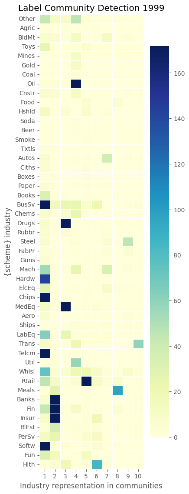
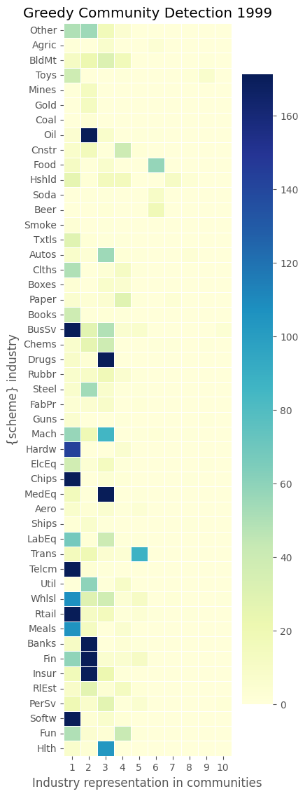
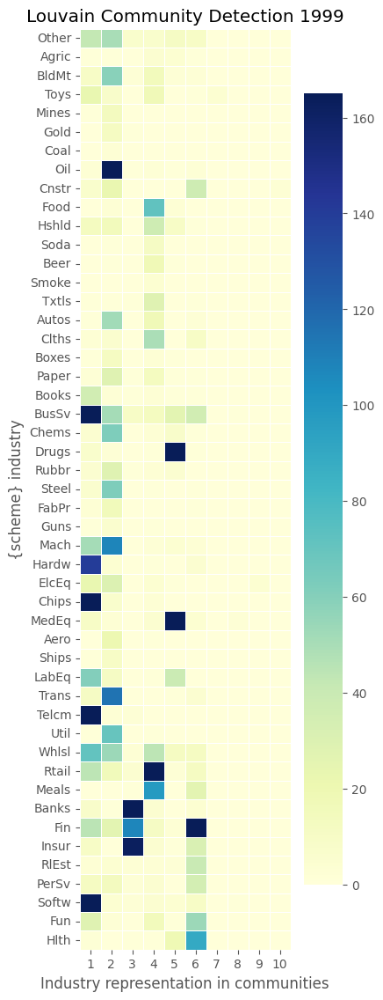
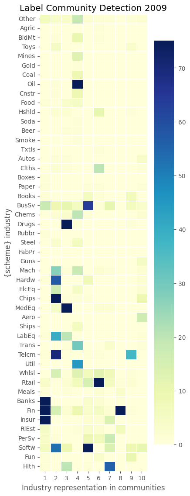
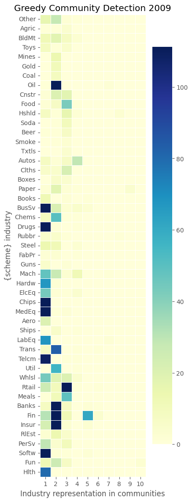
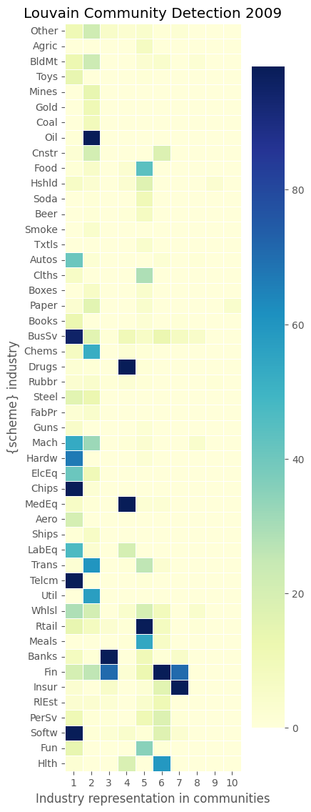
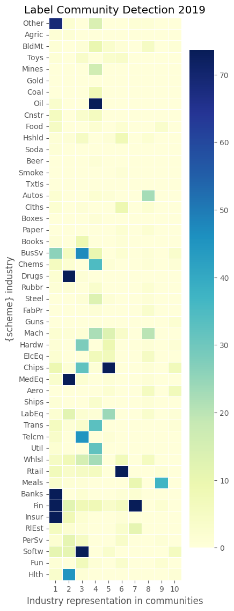
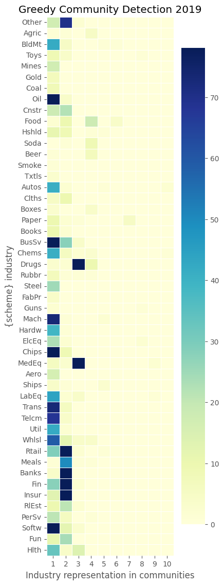
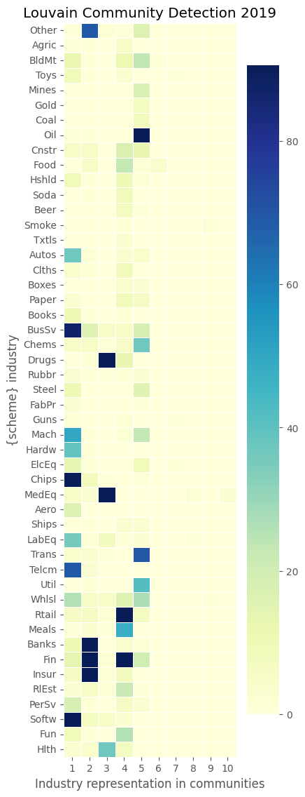
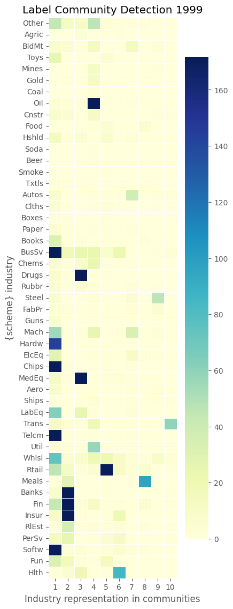
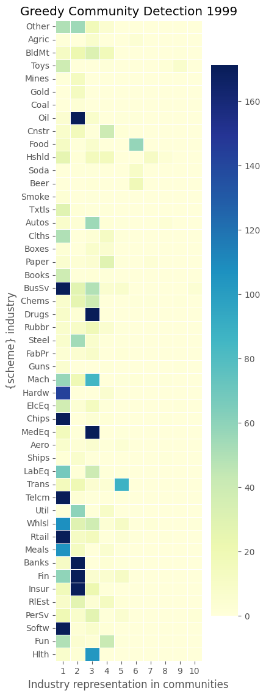
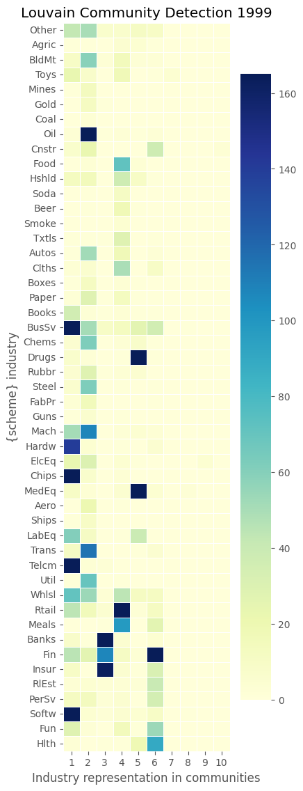
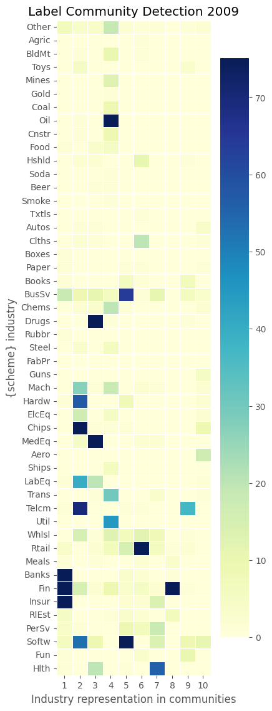
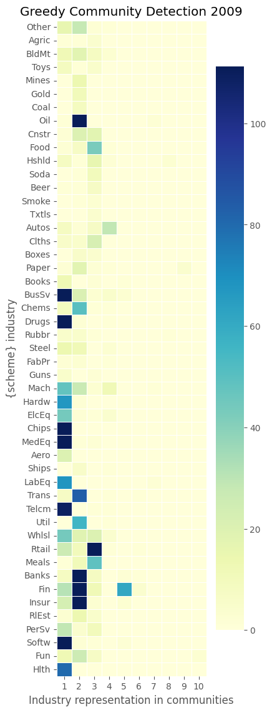
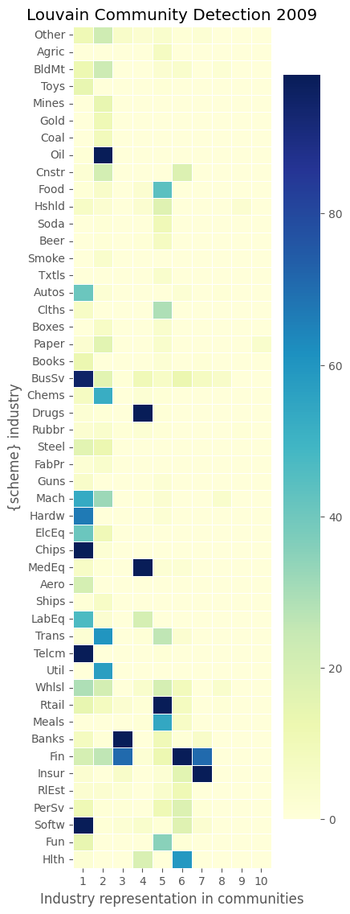
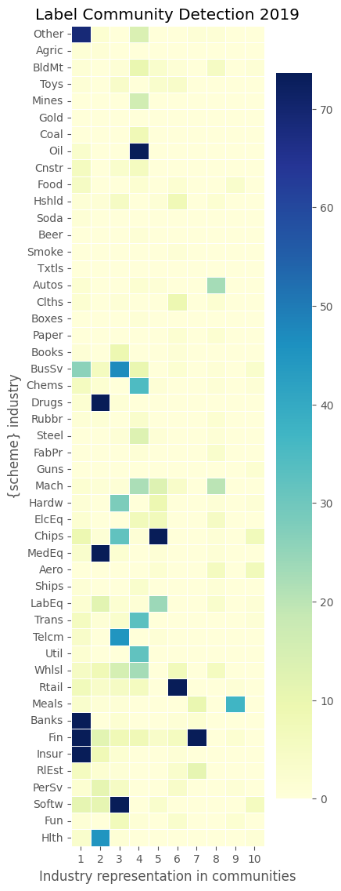
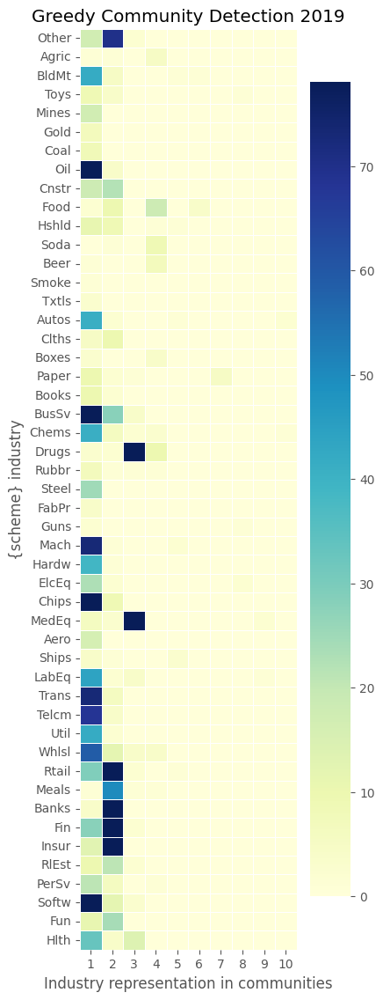
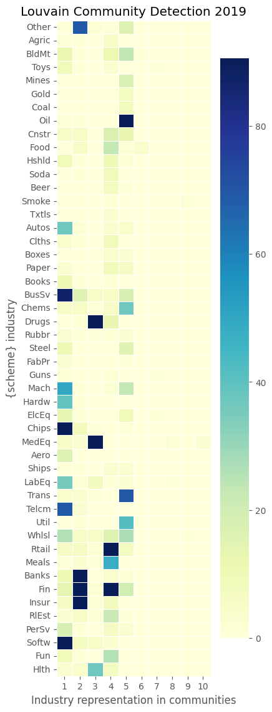
Display latest year info
show(collect['info'][2019],
caption=f"{tnic_scheme} {year} graph info:")
tnic3 2019 graph info:
----------------------
2019
connected False
connected_components 14
size_largest_component 3635
directed False
weighted True
negatively_weighted False
edges 318913
nodes 3669
selfloops 0
density 0.047394
show(collect['community'][2019],
caption=f"{tnic_scheme} {year} community detection:")
tnic3 2019 community detection:
-------------------------------
communities modularity coverage performance
greedy 26 0.4936 0.9775 0.7110
label 91 0.4951 0.9830 0.8971
louvain 21 0.4978 0.9848 0.8398
show(collect['modularity'][2019],
caption=f"{year} modularity of industry sectoring crosswalk schemes:")
2019 modularity of industry sectoring crosswalk schemes:
--------------------------------------------------------
communities modularity coverage performance
bea1947 41 0.4666 0.7492 0.9275
bea1963 59 0.4643 0.6834 0.9525
bea1997 63 0.4639 0.6825 0.9530
codes10 10 0.4713 0.9250 0.8419
codes12 12 0.4859 0.9082 0.8795
codes17 17 0.3787 0.7500 0.8006
codes30 30 0.4828 0.9002 0.9003
codes38 36 0.4692 0.7684 0.8923
codes48 48 0.4749 0.7086 0.9486
codes49 49 0.4749 0.7081 0.9528
codes5 5 0.4743 0.9370 0.8067
sic2 69 0.4688 0.6941 0.9481
sic3 233 0.4152 0.6211 0.9615